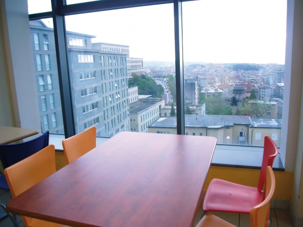
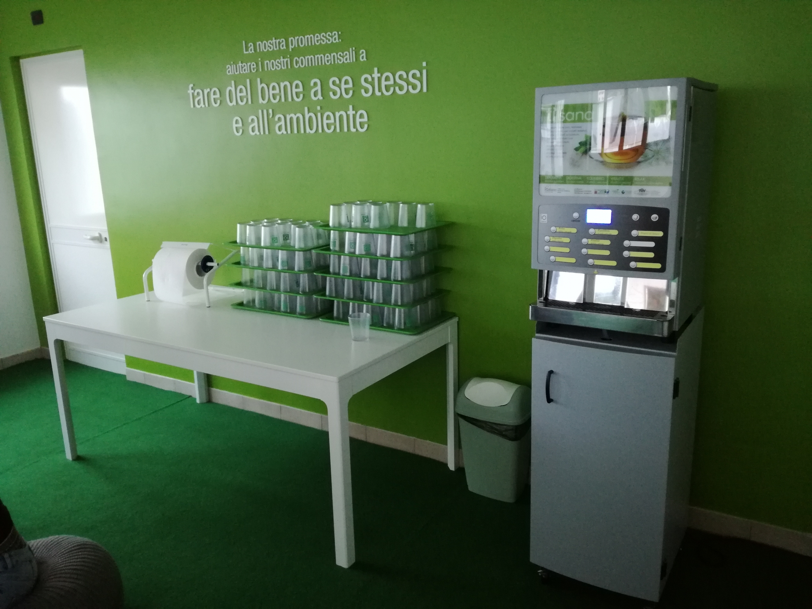

MENSA DI TRIESTE
| PRIMI E SECONDI | DOLCI E FRUTTA |
|---|
AVVISI
LA NOSTRA MENSA
|
 |  |
TARIFFE
| FASCIA | Pasto intero | Pasto ridotto | Colazioni |
|---|---|---|---|
| Prima | 2,30 € | 2,10 € | 0,65 € |
| Seconda | 3,90 € | 3,55 € | 0,75 € |
| Terza | 5,10 € | 4,60 € | 0,85 € |
| Quarta | 7,27 € | 7,06 € | 1,13 € |